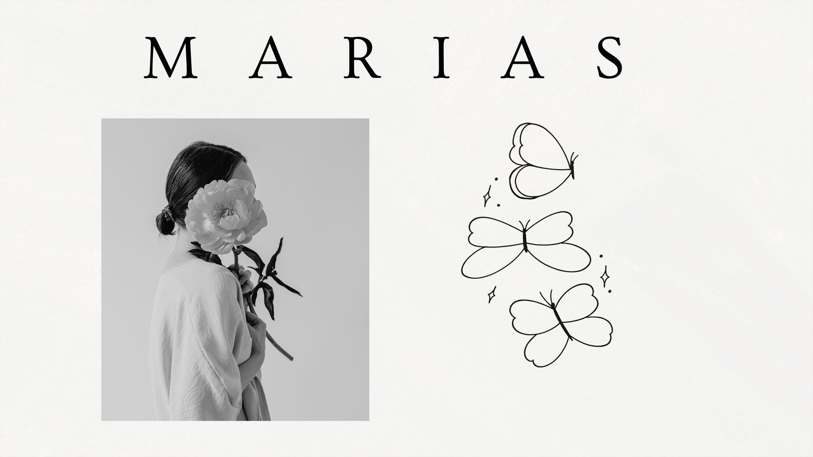
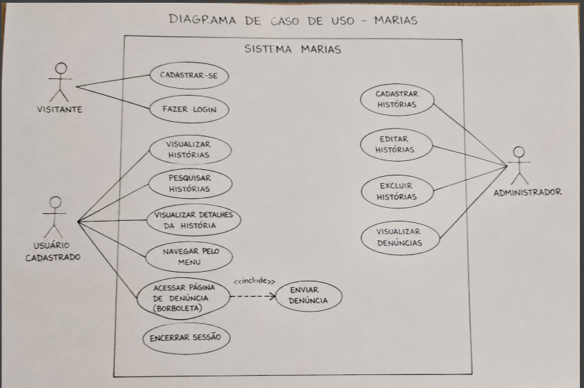

HISTÓRIA
Tudo começou com uma proposta do professor Symon: pesquisar mulheres que marcaram a história e compartilhar suas trajetórias. O que inicialmente parecia apenas uma atividade acadêmica despertou em nosso grupo um novo olhar sobre a importância de conhecer e valorizar histórias de mulheres que, com coragem e determinação, transformaram suas próprias vidas e inspiraram tantas outras.
Durante essa jornada, a história de Maria da Penha nos sensibilizou profundamente. Sua luta por justiça e pelo enfrentamento da violência contra a mulher nos fez compreender que ela representa muito mais do que um nome: representa a força de quem encontrou coragem para transformar a própria dor em esperança e mudança. Foi dessa inspiração que surgiu o nome Marias.
Mais do que uma homenagem a Maria da Penha, Marias simboliza todas as mulheres. Cada Maria carrega uma história, uma luta, um sonho e uma voz que merece ser ouvida. Este projeto nasce para reconhecer essas trajetórias, incentivar a conscientização e lembrar que, por trás de cada mulher, existe uma história que merece ser acolhida, respeitada e jamais esquecida.
DADOS
A violência contra a mulher permanece como um dos maiores desafios sociais do Brasil. De acordo com o levantamento mais recente do Fórum Brasileiro de Segurança Pública, 1.568 mulheres foram vítimas de feminicídio em 2025, o maior número registrado desde que esse crime passou a ser tipificado em lei, em 2015. Isso significa que, em média, uma mulher foi assassinada por razões de gênero a cada cinco horas no país. Além disso, foram registradas 3.870 tentativas de feminicídio, um aumento de 19% em relação ao ano anterior, evidenciando que a violência contra as mulheres continua crescendo.
Esses números refletem uma realidade que vai além da violência física. Muitas mulheres têm suas dores, denúncias e relatos constantemente invalidados, desacreditados ou minimizados, o que dificulta a busca por ajuda e favorece a continuidade dos ciclos de violência. Conscientizar a sociedade, fortalecer redes de apoio e dar visibilidade às histórias e às vozes femininas são passos fundamentais para construir um futuro mais seguro, justo e igualitário para todas.
MAPA DA EMPATIA
PERSONAS

IDENTIDADE VISUAL

A logo do projeto “Marias” foi pensada como uma borboleta, símbolo de transformação, liberdade e delicadeza, representando a força e a feminilidade presentes em cada mulher. Dentro dela, o nome “Marias” surge como essência e identidade, unindo todas essas histórias em um só significado. Assim, a borboleta não é apenas uma forma visual, mas uma representação sensível de crescimento, resiliência e da liberdade de ser e existir.
FONTES ESCOLHIDAS

FORMULÁRIO
Acessar formulárioQuestionário aplicado para coleta de dado.
GRÁFICOS

RESUMO DE RESPOSTAS ABERTAS DO FORMULARIO
A promoção do respeito e o fomento da educação nessa área e a valorização e visibilidade de mulheres incriveis na sociedade.exemplo de resposta "Acho que a sociedade precisa mudar principalmente na forma de educar as pessoas, promovendo mais respeito e igualdade desde cedo. Além disso, é importante valorizar mais as conquistas das mulheres e combater o machismo em todas as áreas"
A falta de segurança e o medo constante de serem agredidas a falta de proteção nas ruas escolas entre outro lugares pois infelizmente não se da a devida visibilidade a questão da segurança da mulher. "A palavra"insegurança" para as mulheres principalmente, é como se fosse uma palavra inexistente, porque a segurança hoje em dia para as mulheres é difícil, e completamente frustante, porque nem em casa com as pessoas que confiamos nós somos acolhidas, ouvidas, e seguros de coração aberto."
Muitas mulheres não são reconhecidas pois a sociedade desde sempre foi contruida encima de um modelo patriarcal, dando mais visibilidade a homens. "se fizessem não seria levado a sério e isso inclui o clássico "fogueira" "herege" e "bruxa" se de fato fizessem elam mortas."
LEVANTAMENTO DE REQUISITOS
O projeto consiste no desenvolvimento de um aplicativo web educativo voltado à divulgação de histórias de mulheres importantes da história, como Anne Frank, Malala Yousafzai, Marie Curie e Frida Kahlo. Além de seu caráter informativo, o sistema também contará com uma área de denúncias destinada ao apoio de mulheres em situação de risco, apresentando uma interface simples, acessível e responsiva para diferentes dispositivos.
O sistema terá três tipos de usuários: visitante, usuário cadastrado e administrador. O visitante poderá visualizar histórias, enquanto o usuário cadastrado terá acesso a conteúdos completos e ao envio de denúncias. Já o administrador será responsável por cadastrar, editar e excluir histórias, além de acompanhar as denúncias recebidas. Entre as principais funcionalidades estão o cadastro e login de usuários, navegação por menu, busca de histórias e acesso rápido à página de denúncias por meio de uma borboleta interativa.
Do ponto de vista técnico, o sistema será desenvolvido em Django com banco de dados SQLite, priorizando segurança, desempenho e proteção de dados dos usuários. O objetivo do projeto é unir educação e conscientização, valorizando histórias de mulheres inspiradoras e oferecendo também um espaço de acolhimento e apoio.
Documento Levantamento de RequisitosLOGO ANIMADA
DIAGRAMA DE CASOS DE USO
